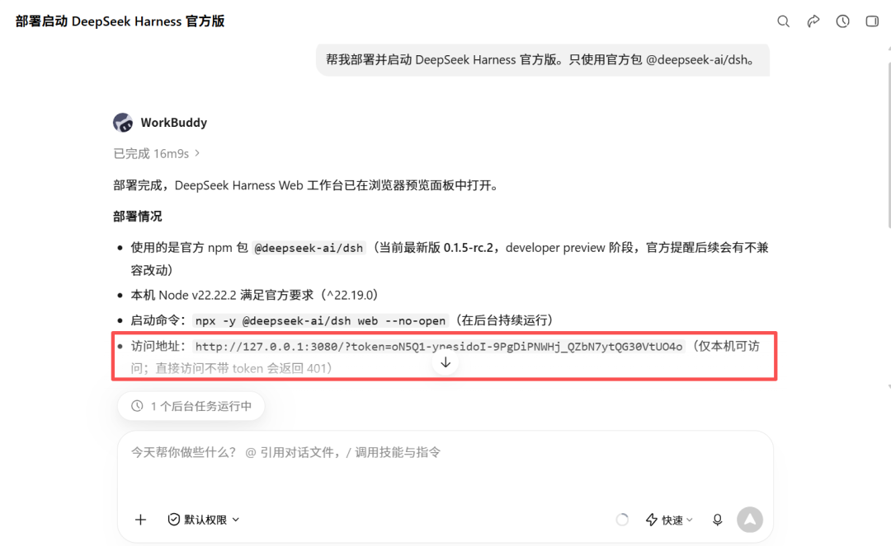
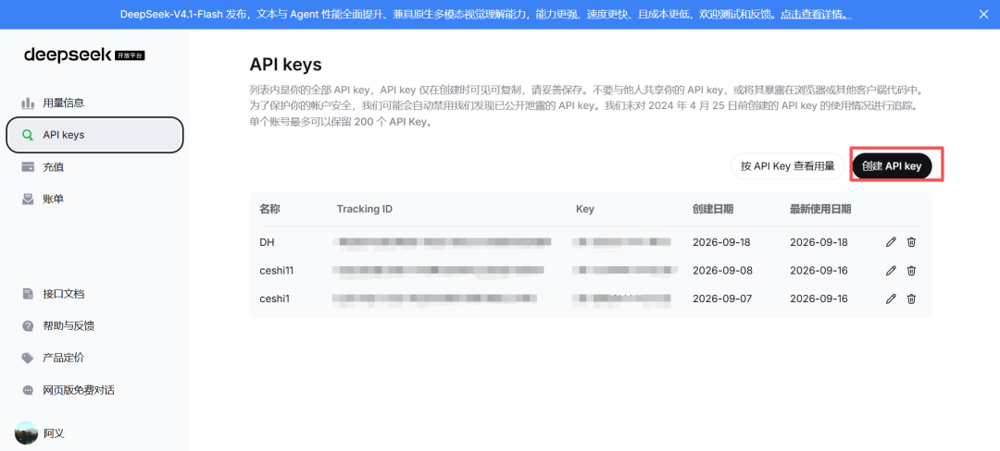
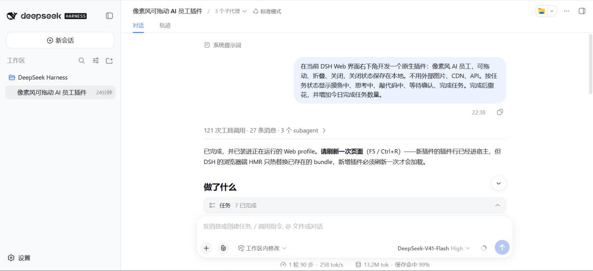
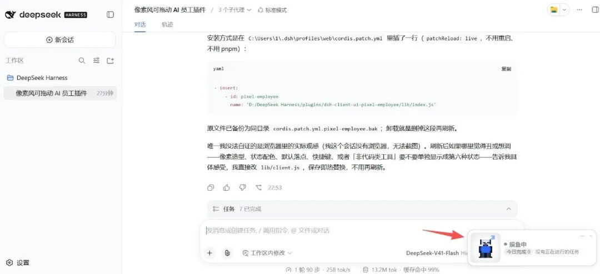
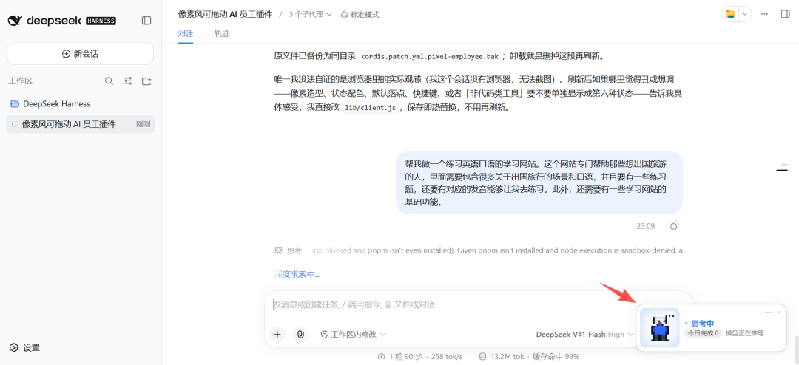
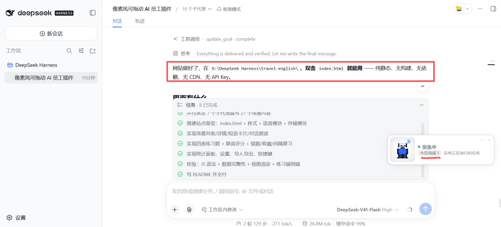
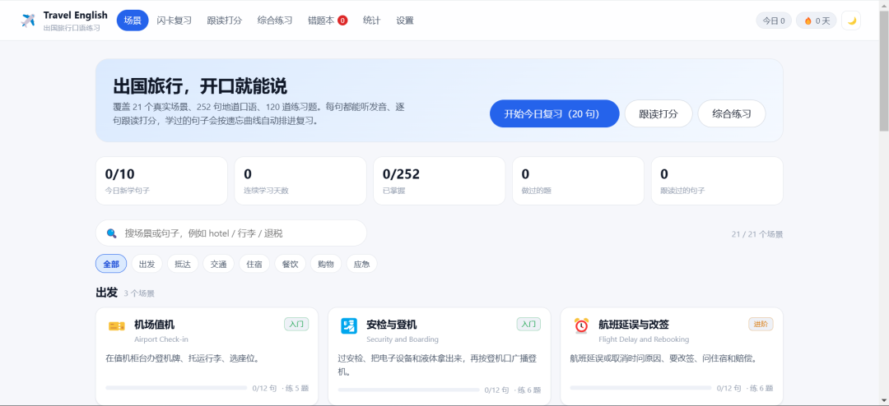
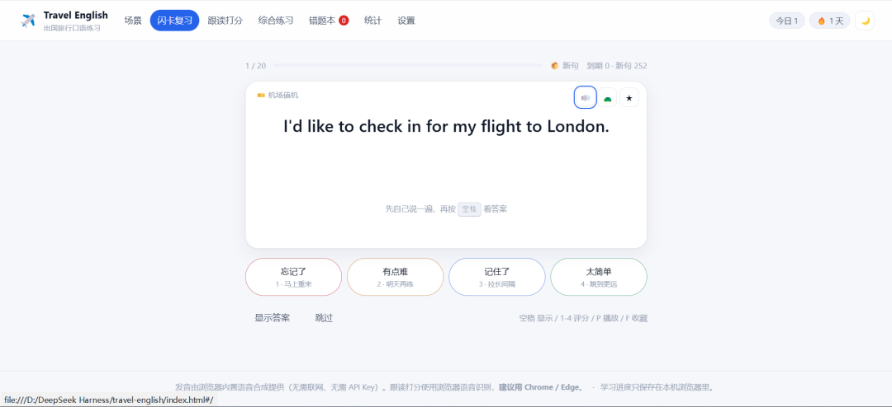
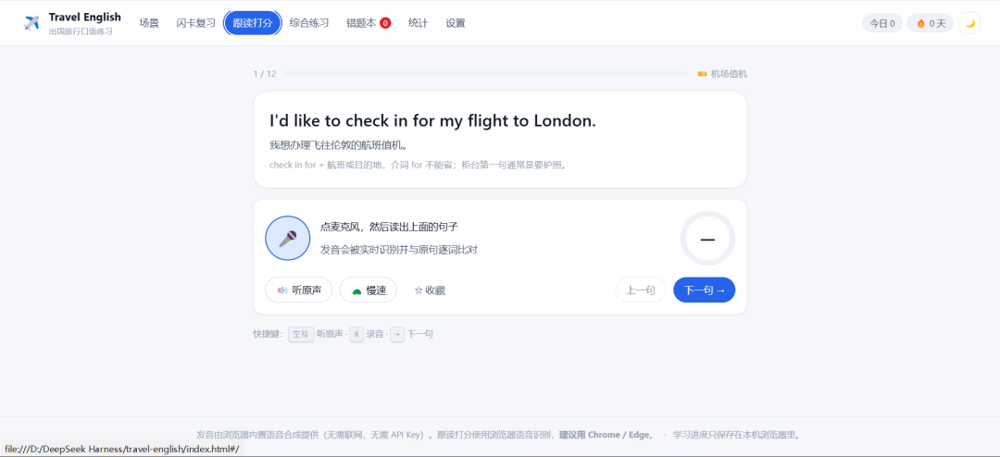
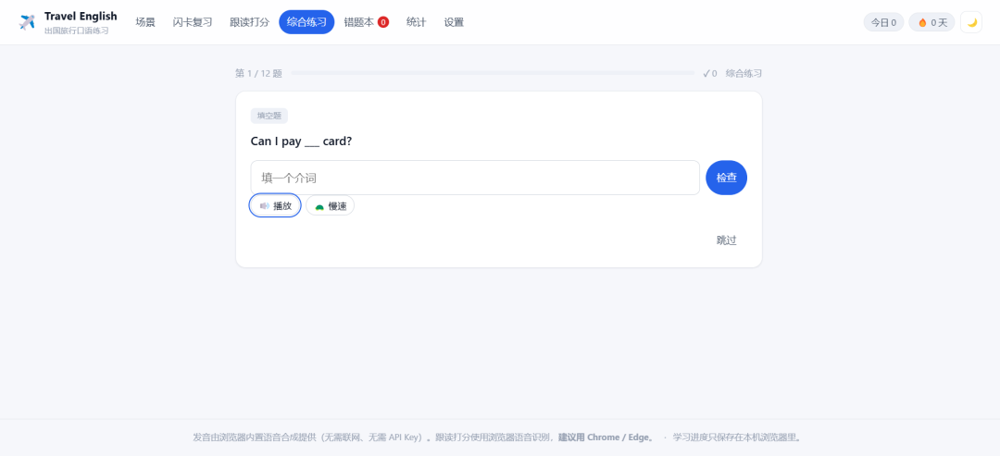

8月13日，DSH 开源，12小时破 5 万 Star，一周冲到 16 万。
9月10日，v0.1.5 发布，适配 V4.1 Flash。
DeepSeek Harness 到底是什么？对我们有什么启发？
我让 WorkBuddy 帮我装了 DSH，然后让 DSH 给自己做了个「AI打工人」插件，最后用它完成了一个真实任务：开发一个出国旅行英语口语学习网站。
全过程拆开，想试的直接抄。
保姆级流程
准备：电脑、WorkBuddy、DeepSeek 开放平台账号、API Key。
1. 部署启动
打开 WorkBuddy，发：
帮我部署并启动 DeepSeek Harness 官方版。只使用官方包 @deepseek-ai/dsh。
自动安装、启动、检查。实测跑了十多分钟，期间不用盯着，该干嘛干嘛，跑完 WorkBuddy 会把地址给你。
完成后拿到地址，浏览器打开，点继续。127.0.0.1是本机地址，别人访问不了。打不开就让 WorkBuddy 查服务和端口。

2. 配置模型
DeepSeek 开放平台创建 API Key，复制。回到 DSH 模型设置，填入，保存。新建项目，选运行模式和模型。Key 别发给别人。
DSH 本身免费开源，花的只有 DeepSeek API 的调用费。

3. 让 DSH 给自己做插件
我想测一件事：DSH 的插件系统到底能到什么程度。
在 DSH 里输入：
请在当前 DSH 界面中，开发一个可以直接安装和使用的"AI打工人"互动插件。我想要的不是独立网页，而是一个显示在当前 DSH 界面右下角的原生客户端插件。
具体要求：
在界面右下角增加一个小型悬浮窗口；
窗口里是一名坐在电脑前工作的像素风AI员工；
界面精致、轻松、有趣，不要做成复杂的管理后台；
组件可以拖动、折叠和关闭；
关闭状态保存在本地，下次打开DSH时能够记住；
不使用外部图片、CDN、API或者在线服务；
根据任务状态显示摸鱼中、思考中、敲代码中、等待确认和完成任务等不同效果；
任务完成后播放撒花动画，并增加今日完成任务数量。
刷新，右下角多了个像素风小人。没任务时摸鱼。
插件做出来了。但能不能跟着任务进度变，还得试。


4. 真实任务验证
给 DSH 安排：
帮我做一个练习英语口语的学习网站。这个网站专门帮助那些想出国旅游的人，里面需要包含很多关于出国旅行的场景和口语，并且要有一些练习题，还要有对应的发音能够让我去练习。此外，还需要有一些学习网站的基础功能。
观察右下角：
摸鱼中 → 思考中 → 等待确认 → 敲代码中 → 完成撒花。
任务数从「今日完成0」发生变化。
最终做出一个html本地文件：包含多个场景，随便点开一个页面和功能都能正常用，词汇、句型、练习题、发音都是现成的，点开就能练。






写在最后
智能体生态正在爆发。有人围绕插件做商业化，政企已经在用智能体搭自己的 Agent 底座，比如：文档协同、分工查询助手等等。
但这次测试让我印象最深的，不是插件多有趣，而是一个正在发生的变化：AI 正在从「你问它答」变成「可以改造的工作台」。DeepSeek 亲自下场做 Harness，把「一切皆插件」写进设计里；普通人用几句提示词，就能给工具装上新能力——甚至让 AI 给它自己装。工具第一次可以自己生长。
这可能是 Agent 时代的分水岭：以前我们比较的是模型有多聪明，接下来要比的，是谁更会给 AI 搭工作台。
所以我的判断是：只想写文案、处理文件，豆包、DeepSeek 就够了；想看懂 AI 下一步往哪走，DSH 值得花时间研究。